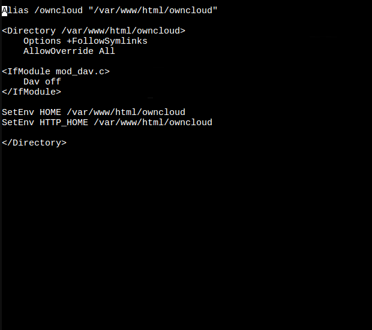
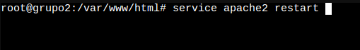
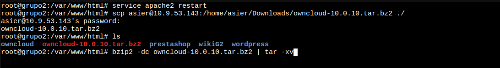
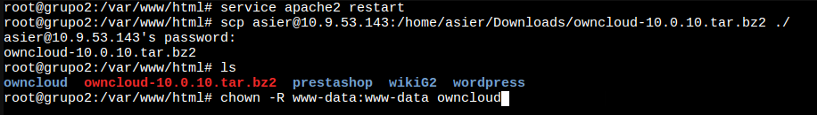
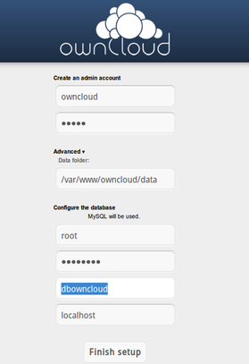

Que es owncloud
OwnCloud es un sistema para almacenar archivos y servicios en la nube (a través de Internet) que implementa medidas de seguridad suficientes para mantener a salvo los documentos de una organización. Se trata de un software instalado en un servidor al que se accede mediante un navegador web o a través de un programa instalado en nuestro escritorio denominado cliente ownCloud.
Instalacion
Metemos desde la terminal del proxmox los siguientes comandos:
sudo add-apt-repository ppa:ondrej/php sudo apt-get update sudo apt-get install -y apache2 mariadb-server libapache2-mod-php7.2 openssl php-imagick php7.2-common php7.2-curl php7.2-gd php7.2-imap php7.2-intl php7.2-json php7.2-ldap php7.2-mbstring php7.2-mysql php7.2-pgsql php-smbclient php-ssh2 php7.2-sqlite3 php7.2-xml php7.2-zip
Configuramos el apache:
Para ello, lo que haremos será crear y editar el siguiente archivo:
nano /etc/apache2/sites-available/owncloud.conf
Y dentro del archivo metemos el siguiente codigo:
Alias /owncloud "/var/www/owncloud/" <Directory /var/www/owncloud/> Options +FollowSymlinks AllowOverride All <IfModule mod_dav.c> Dav off </IfModule> SetEnv HOME /var/www/owncloud SetEnv HTTP_HOME /var/www/owncloud </Directory>
Guardamos el documento y crearemos un link para habilitar el archivo y seguido reiniciaremos el apache
ln -s /etc/apache2/sites-available/owncloud.conf /etc/apache2/sites-enabled/owncloud.conf service apache2 restart
Desde la terminal de proxmox de nuestro contenedor Ubuntu añadiremos los siguientes comandos:
mkdir /var/www/html/owncloud cd /var/www/html/owncloud wget download.owncloud.org/community/owncloud-10.0.10.tar.bz2
Con esto nos habremos descargado los archivos para instalar owncloud. Ahora toca descomprimirlo y prepararlo todo para instalarlo
Descomprimimos el archivo:
bzip2 -dc owncloud-10.0.10.tar.bz2 |tar -xv para descomprimir el archivo que nos hemos descargado
Para terminar con la instalacion, lo que haremos será darle permisos a todo. Para ello usamos el siguiente comando y listo:
sudo chown -R www-data:www-data owncloud
Ahora crearemos la base de datos donde ira todo guardado. Tambien le daremos un usuario y una base de datos para la aplicacion y le damos permiso:
mysql -u root MariaDB [(none)]> CREATE DATABASE 'owncloud'; MariaDB [(none)]> CREATE USER 'owncloud'@'localhost' IDENTIFIED BY 'tucontraseña'; MariaDB [(none)]> GRANT ALL ON owncloud.* TO 'owncloud'@'localhost' IDENTIFIED BY 'tucontraseña'; MariaDB [(none)]> FLUSH PRIVILEGES;
Una vez terminado todo nos dirigimos a la IP del servidor y nos pedirá lo siguiente:
owncloud contraseña (de la base de datos) owncloud localhost
Una vez introduzcamos todos los datos, el servidor owncloud estará listo, pero en caso de que no lo consiga, he aqu un video ;)